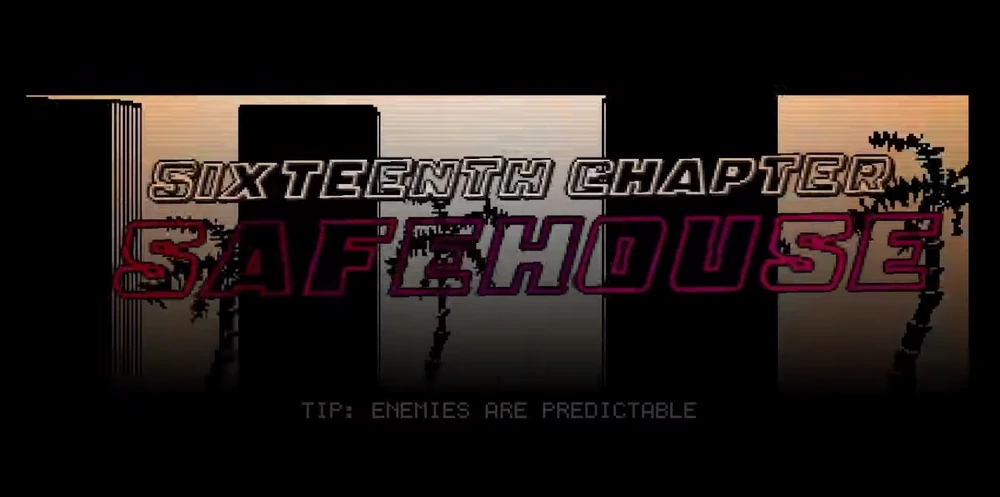
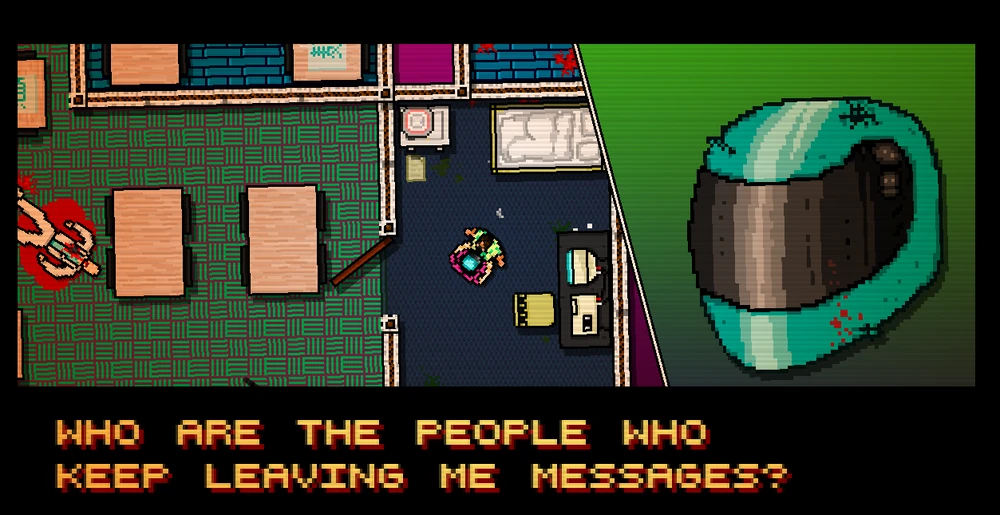
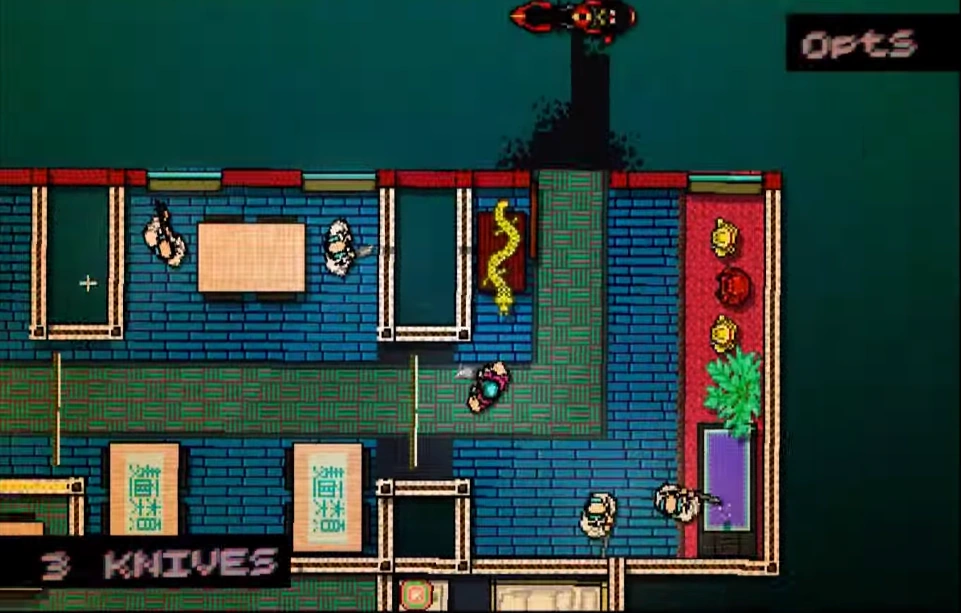

Objetivo
A primeira missão jogável com o Biker. Diferente de Jacket, ele usa um cutelo e facas de arremesso. Ele não pode pegar armas do chão. Nesta fase, Biker interroga um dono de um restaurante chinês para saber onde encontrar os mandantes.
- Dificuldade: Fácil.
- Dica Se errar o alvo com a faca você pode recupera-la.
Galeria da Missão

